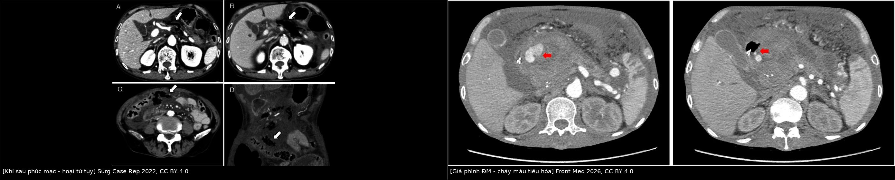
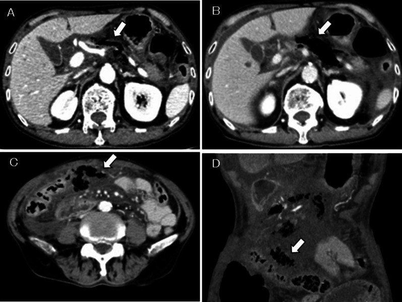
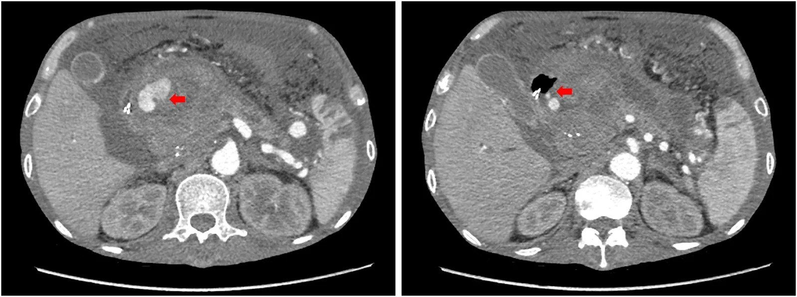
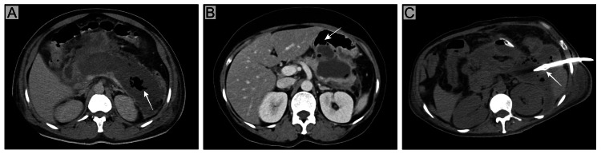

1683 — Hoại tử tụy nhiễm khuẩn & bóc hoại tử tối thiểu xâm lấn (infected pancreatic necrosis, step-up approach)
Tags: pattern:hoai-tu-tuy pattern:khi-trong-o pattern:gia-phinh-dong-mach vung:tuy vung:sau-phuc-mac score:Atlanta-2012 score:MCTSI protocol:CT-bung-co-can-quang protocol:dan-luu-qua-da protocol:EUS-LAMS incidentaloma:khong
Mức chắc chắn (certainty): tổng hợp y văn (literature synthesis) — tổng quan điều trị hoại tử nhiễm khuẩn (Cureus 2025, PMC12104691), tổng quan kháng sinh – vi sinh – dược động học (J Antimicrob Chemother 2026, PMC13016968), mạng lưới so sánh 33 nghiên cứu (2026, PMC13356536), tổng quan thời điểm can thiệp (World J Emerg Surg 2023, PMC9883927), loạt step-up thực hành 41 ca (BMC Gastroenterol 2024, PMC11214239), phân tích gộp khí sau phúc mạc 60 ca (Surg Case Rep 2022, PMC9512950, có ảnh CT), ca giả phình động mạch tụy vỡ (Front Med 2026, PMC13689719, có ảnh CT) và ca hội chứng ống tụy đứt (Cureus 2026, PMC12998971). Không có thử nghiệm nào chứng minh một phác đồ kháng sinh tối ưu; chỗ suy luận được ghi rõ.
Câu chốt: hoại tử nhiễm khuẩn không phải "ổ dịch có khí = mổ ngay", mà là chuỗi quyết định theo thời gian: (1) không kháng sinh dự phòng, chỉ điều trị khi nghi nhiễm thật; (2) hoãn can thiệp tới khi ổ hoại tử bao vỏ / hóa lỏng (thường ≥ 4 tuần) — 1/3–40% khỏi chỉ bằng kháng sinh; (3) step-up: dẫn lưu qua da/nội soi trước, bóc hoại tử tối thiểu xâm lấn sau, mổ mở chỉ là cứu cánh; (4) nâng bậc khi sau 72 giờ dẫn lưu không cải thiện. Ba bẫy chết người: khí trong ổ không đồng nghĩa nhiễm khuẩn, bỏ sót giả phình động mạch, và gọi WON là "nang giả" rồi can thiệp sai.
1. Tổng quan bệnh học – cơ chế hình ảnh
1.1 Dịch tễ và vì sao đáng chú ý
- ~20% viêm tụy cấp tiến triển thành viêm tụy hoại tử; trong số đó ~30% bị nhiễm khuẩn hoại tử (PMC12104691; PMC13016968).
- Tử vong hoại tử nhiễm khuẩn 15–35%, so với 0–1% ở viêm tụy nhẹ; có suy tạng kèm theo thì tử vong gấp đôi (PMC12104691; PMC13016968).
- Tử vong sớm do suy tạng do SIRS (hoại tử còn vô khuẩn); tử vong muộn do nhiễm khuẩn — nên "chờ" không phải là "không làm gì", mà là đợi đúng cửa sổ mô học (PMC13016968).
- Nhiễm nấm gặp 26,6% (gộp 22 nghiên cứu / 2.151 ca), gắn với nằm viện–ICU kéo dài và tử vong cao hơn (PMC12104691).
- MDRO tăng theo thời gian nằm viện: một loạt Trung Quốc 188 ca, tỷ lệ phân lập MDRO từ 16,7% (2010) lên 74,6% (2019); gần 50% bệnh nhân có MDRO sau 150 ngày nằm viện (PMC13016968).
1.2 Sinh lý bệnh: từ hoại tử vô khuẩn đến ổ nhiễm
- Thiếu máu vi mạch + hoạt hóa enzyme tụy → hoại tử mô tụy và mô mỡ quanh tụy (hoại tử mỡ, xà phòng hóa).
- Hoại tử là môi trường nuôi cấy hoàn hảo: chuyển vị vi khuẩn từ ruột (E. coli, Klebsiella spp. chiếm ưu thế; Enterococcus và Candida cũng thường gặp) (PMC13016968).
- Nhiễm khuẩn thường xuất hiện muộn (sau 2–4 tuần), nhưng 1/4 ca có thể nhiễm sớm 7–14 ngày ("early IPN") (PMC12104691).
- Ổ hoại tử trải qua hóa lỏng dần rồi bao vỏ xơ — đây là cơ sở của mọi ngưỡng thời gian trong bài này.
1.3 TẠI SAO hình ảnh trông như vậy (vật lý + mô bệnh)
- Hoại tử không ngấm cản quang: vùng hoại tử mất mao mạch → không có iod tới → giảm đậm độ so với nhu mô tụy lành đang ngấm ở thì tĩnh mạch cửa/muộn. Vì vậy CT không cản quang gần như vô dụng để đánh giá hoại tử.
- Thời điểm: hoại tử tiến triển trong 72–96 giờ đầu; CT quá sớm đánh giá thấp hoại tử. Bắt đầu bằng CT bụng có cản quang sau 72 giờ khi bệnh nặng hoặc không cải thiện (PMC12104691).
- Khí trong ổ (bubble sign): khí tự do trong mô hoại tử tạo đốm đen tuyệt đối (khoảng −1.000 HU), không ngấm, thường thành bọng rải rác hoặc mức khí–dịch. Khí xuất hiện vì vi khuẩn sinh hơi, nhưng cũng có thể do rò vào ống tiêu hóa hoặc do can thiệp (catheter, stent) — ba nguyên nhân này không phân biệt được chỉ bằng khí (PMC12104691, Figure 1).
- Độ đặc hiệu vs độ nhạy: khí là dấu hiệu đặc hiệu cao nhưng độ nhạy thấp — phần lớn ổ nhiễm khuẩn không có khí. Câu này là chốt để không "loại trừ nhiễm khuẩn vì không thấy khí" (PMC12104691).
- Dịch – mảnh hoại tử: < 4 tuần là tụ dịch hoại tử cấp (ANC) — chưa có vỏ, trong ổ có mảnh đặc; ≥ 4 tuần là hoại tử có vỏ (WON) — vỏ xơ ngấm thuốc, bên trong mảnh hoại tử rắn (khác nang giả chỉ có dịch, không có mảnh đặc).
- MRI: dịch T2 rất sáng; mảnh hoại tử T2 trung bình–thấp; máu bán cấp T1 sáng (methemoglobin); khí là khoảng trống tín hiệu (signal void) trên mọi chuỗi xung. MRCP phát hiện rò ống tụy / ống tụy đứt (DPDS) — thông tin quyết định có cần stent vĩnh viễn hay cắt tụy.
- Siêu âm: thấy dịch, hơi và sỏi mật, nhưng kém với mảnh hoại tử và khí lan tỏa; EUS lại là công cụ dẫn đường can thiệp (đo khoảng cách tới dạ dày/tá tràng, chọn vị trí đặt LAMS).
1.4 Ngưỡng định lượng trụ cột
| Đại lượng | Con số | Nguồn |
|---|---|---|
| Tỷ lệ hoại tử trong viêm tụy cấp | ~20%; nhiễm khuẩn ~30% của hoại tử | PMC13016968 |
| Tử vong hoại tử nhiễm khuẩn | 15–35% (nhẹ 0–1%); có suy tạng gấp đôi | PMC13016968; PMC12104691 |
| Mốc Atlanta 2012 | < 4 tuần: ANC · ≥ 4 tuần: WON (vỏ xơ, có mảnh đặc) | Atlanta 2012 |
| Cửa sổ can thiệp | hoãn tới khi bao vỏ/hóa lỏng, thường ≥ 4 tuần | PMC9883927 |
| Mổ mở quá sớm | mổ trong 47–72 giờ: tử vong 58% vs 27% khi mổ muộn (≥ 12 ngày) | PMC13016968 |
| Không can thiệp được | 1/3–40% khỏi chỉ bằng kháng sinh khi chờ bao vỏ | PMC12104691; PMC13016968 |
| POINTER (104 ca) | can thiệp 2,6 vs 4,4 lần (chênh 1,8; KTC 0,6–3,0) khi hoãn | PMC12104691 |
| Dẫn lưu qua da (PCD) | bắt đầu 12–14 Fr → nâng tới 20 Fr; ~50% khỏi chỉ với PCD; tử vong chung 18% | PMC12104691 |
| Thất bại PCD | BMI > 25, BISAP ≥ 4, nhiều mô hoại tử, ổ không đồng nhất, suy đa tạng | PMC12104691 |
| Ngưỡng nâng bậc | sau 72 giờ dẫn lưu không cải thiện → chụp lại/nâng cấp | PMC12104691 |
| Dự báo cần bóc hoại tử | ổ ≥ 10 cm, lan dọc đại tràng (paracolic), ≥ 30% tụy hoại tử | PMC12104691 |
| Kháng sinh dự phòng | KHÔNG giảm nhiễm khuẩn/tử vong (12% vs 9%; 18% vs 12%) | PMC13016968 |
| PCT baseline | ≥ 1,0 ng/mL: tử vong sau can thiệp 26% vs 7% (p = 0,044) | PMC12104691 |
| Cấy máu dương | ~30% ca hoại tử nhiễm khuẩn | PMC12104691 |
| Khí sau phúc mạc (60 ca) | tử vong 27%; khí xuất hiện < 7 ngày → tử vong 44,1% | PMC9512950 |
| Giả phình động mạch tụy vỡ | tử vong chung > 50%; nút mạch thành công ngay 85% (11/13) | PMC13689719 |
2. Mẫu hình + chẩn đoán phân biệt theo vị trí (Gamut)
2.1 Mẫu hình chính
- Ổ dịch có khí trong/ quanh tụy → gamut: nhiễm khuẩn sinh hơi, rò tiêu hóa, sau can thiệp (dẫn lưu/stent), khí sau phúc mạc do thủng tạng rỗng, viêm tụy khí thũng vô khuẩn.
- Vùng tụy không ngấm thuốc, bờ rõ, không vỏ → hoại tử; không ngấm + vỏ xơ + mảnh đặc → WON.
- Đốm tăng đậm độ trong ổ, ngấm đồng thì với động mạch → giả phình động mạch; nếu thoát mạch hoạt động thì máu tụ tăng đậm độ thì muộn.
- Ổ dịch dai dẳng sau khi hết viêm, MRCP mất liên tục ống tụy → hội chứng ống tụy đứt (DPDS).
2.2 Gamut theo vị trí giải phẫu
- Đầu tụy / rãnh tá–tụy: giả phình động mạch tá–tụy và gan, rò tá tràng, ứ mật do chèn ép ống mật chủ.
- Thân–đuôi tụy: giả phình động mạch lách (hay gặp nhất), huyết khối tĩnh mạch lách → tăng áp cửa trái, rò dạ dày.
- Khoang cạnh thận trước / sau phúc mạc: khí lan theo mạc treo đại tràng ngang, dọc đại tràng, xuống hố chậu — đây là lý do ổ "xa dạ dày" không đặt được LAMS.
3. Bảng so sánh phân biệt (ma trận đối chiếu)
| Thực thể (entity) | Hình ảnh điển hình | Chốt vào (rule-in) | Chốt loại (rule-out) | Gợi ý xác nhận |
|---|---|---|---|---|
| Hoại tử nhiễm khuẩn (IPN) | ổ dịch + mảnh hoại tử, ± khí, vỏ xơ ngấm thuốc | khí trong ổ (đặc hiệu cao) + sốt/diễn tiến xấu + PCT ≥ 1,0 ng/mL | không có khí KHÔNG loại trừ nhiễm khuẩn | cấy dịch lúc/ngay sau dẫn lưu, không cấy muộn |
| Hoại tử vô khuẩn | cùng hình ảnh, không khí, không hội chứng nhiễm | diễn tiến ổn định, không tăng PCT/CRP | không dùng kháng sinh dự phòng | theo dõi lâm sàng + CT lại |
| Viêm tụy khí thũng (emphysematous) | khí lan sau phúc mạc rất sớm, có thể trong ống tụy | khí < 7 ngày từ khởi phát → tiên lượng xấu (tử vong 44,1%) | khí muộn sau dẫn lưu không phải thể này | CT có cản quang + bệnh cảnh |
| Nang giả tụy (pseudocyst) | ổ dịch đồng nhất, vỏ mỏng, không mảnh đặc | ≥ 4 tuần, dịch thuần | có mảnh hoại tử = WON, không phải nang giả | MRI/MRCP, EUS |
| Rò tiêu hóa vào ổ hoại tử | khí + mức khí–dịch thay đổi, thành ổ dính quai ruột | khí tái xuất dù không can thiệp | không mặc định là nhiễm khuẩn | CT nhiều thì, nội soi/fluoroscopy |
| Khí sau can thiệp | khí dọc đường catheter/stent, ít, không lan | có can thiệp trong 72 giờ trước | không đổi kháng sinh chỉ vì khí | so sánh phim trước–sau |
| Giả phình động mạch | nang tăng đậm độ thì động mạch, ngấm song hành ĐMC | ngấm đồng thì động mạch, có thoát mạch | không ngấm = không phải giả phình | CTA/DSA, nút mạch |
| Huyết khối tĩnh mạch lách/cửa | khuyết thuốc trong lòng tĩnh mạch, lách to, tuần hoàn bàng hệ | khuyết thuốc không ngấm | không phải ổ dịch | CTV/MRV |
| Hội chứng ống tụy đứt (DPDS) | ổ dịch dai dẳng, tụy teo phần đầu xa, mất liên tục ống | MRCP mất liên tục ống tụy chính | ổ dịch đơn thuần tự khỏi | MRCP + dẫn lưu nội bộ lâu dài |

Trái: khí sau phúc mạc quanh thân tụy (viêm tụy khí thũng) — Surg Case Rep 2022 (PMC9512950), CC BY 4.0. Phải: giả phình đầu tụy có thoát mạch vào tá tràng — Front Med 2026 (PMC13689719), CC BY 4.0. Cả hai đều là "khí/máu" trong ổ hoại tử, nhưng một bên đòi dẫn lưu – một bên đòi nút mạch cấp cứu.
4. Protocol chụp + hệ phân độ/điểm chuẩn hóa
4.1 Protocol
- CT bụng – khung chậu có cản quang, 3 thì (động mạch – tĩnh mạch cửa – muộn), lát ≤ 1–1,5 mm, sau 72 giờ từ khởi phát khi bệnh nặng/không cải thiện.
- Thì động mạch bắt buộc khi nghi giả phình hoặc chảy máu; thì muộn để thấy thoát mạch hoạt động (đốm tăng đậm độ lan rộng giữa các thì).
- Đo và ghi: kích thước ổ lớn nhất (3 chiều), số ổ, % tụy hoại tử, vị trí so với dạ dày/tá tràng (mm), lan dọc đại tràng/hố chậu, có mảnh đặc trong ổ, khí, giả phình, huyết khối tĩnh mạch.
- MRI/MRCP khi cần phân biệt WON vs nang giả, tìm rò ống tụy, DPDS, hoặc bệnh nhân trẻ/tránh iod.
- EUS trước can thiệp nội soi: khoảng cách thành dạ dày–ổ, mạch máu nằm trên đường chọc (chống chỉ định đặt LAMS nếu có mạch xen giữa).
4.2 Phân độ
- Atlanta 2012 (sửa đổi): < 4 tuần → ANC** (tụ dịch hoại tử cấp); ≥ 4 tuần → WON (hoại tử có vỏ). Viêm tụy nhẹ / trung bình / nặng theo **suy tạng > 48 giờ.
- MCTSI (CT severity index sửa đổi): 0–10; 0–2 nhẹ · 4–6 trung bình · 8–10 nặng (điểm +2 cho hoại tử > 30% và +2 cho biến chứng).
- BISAP ≥ 4 = nguy cơ cao, đồng thời là yếu tố dự báo thất bại dẫn lưu (PMC12104691).
4.3 Thuật toán step-up
flowchart TD
A[Hoại tử tụy nghi nhiễm khuẩn] --> B{Ổ đã bao vỏ / hóa lỏng?}
B -->|Chưa| C[Kháng sinh đúng + nuôi ăn tiêu hóa + chờ]
C --> D{Diễn tiến xấu / suy tạng?}
D -->|Không| E[CT lại sau 5-7 ngày]
D -->|Có| F[Dẫn lưu sớm có kiểm soát]
B -->|Rồi| G{Vị trí sát dạ dày hoặc tá tràng?}
G -->|Có| H[EUS dẫn lưu xuyên thành + LAMS]
G -->|Không| I[Dẫn lưu qua da 12-14 Fr, nâng tới 20 Fr]
F --> H
F --> I
H --> J{Sau 72 giờ cải thiện?}
I --> J
J -->|Có| K[Tiếp tục rửa ổ + kháng sinh theo đáp ứng]
J -->|Không| L[Bóc hoại tử nội soi qua stent hoặc VARD]
L --> M{Còn nhiễm / suy tạng?}
M -->|Không| K
M -->|Có| N[Mổ mở bóc hoại tử - cứu cánh]
Ghi chú: "dẫn lưu sớm có kiểm soát" chỉ dành cho nhiễm khuẩn có hội chứng nhiễm nặng/suy tạng; còn lại hoãn tới khi bao vỏ vì ít can thiệp hơn (POINTER).
4.4 Kháng sinh, vi sinh và thời gian điều trị
- Không dự phòng: hai RCT mù đôi (ciprofloxacin + metronidazol n = 114; meropenem n = 100) không giảm hoại tử nhiễm khuẩn (12% vs 9%; 18% vs 12%) hay tử vong (PMC13016968).
- Lấy cấy đúng lúc: cấy dịch ổ trong/ngay sau can thiệp; cấy dịch dẫn lưu muộn không diễn giải được — Enterococcus và nấm xuất hiện sau vài tuần thường là cư trú (colonization), không phải nhiễm xâm lấn (PMC13016968).
- Nấm: không điều trị theo kinh nghiệm dù tỷ lệ cấy dương 10–20%; cân nhắc khi nằm viện lâu, nhiều kháng sinh, thất bại với kháng sinh phổ rộng; nếu có nhiễm nấm huyết → echinocandin ưu tiên hơn azole (PMC13016968; PMC12104691).
- Thời gian: cá thể hóa theo đáp ứng lâm sàng và mức độ kiểm soát ổ nhiễm — chưa có bằng chứng xác định thời gian tối ưu; nguyên tắc là ngừng sớm khi nguồn nhiễm đã được kiểm soát, tránh "kháng sinh vô tận" vì MDRO tăng theo ngày điều trị (OR 1,08/ngày, KTC 1,03–1,16) (PMC13016968).
- De-escalation khi có kết quả cấy; Enterococcus liên quan suy tạng dai dẳng (OR 3,08) và tử vong (OR 5,78) (PMC13016968).
4.5 Kết quả của step-up và các mốc can thiệp
- PANTER (n = 88): step-up giảm biến chứng nặng, suy tạng, đái tháo đường, thoát vị vết mổ; tử vong tương đương trong ngắn hạn; theo dõi 86 ± 11 tháng tử vong 44% vs 73% (p = 0,005) (PMC12104691).
- Mạng lưới 33 nghiên cứu (2026): bóc hoại tử nội soi so với mổ mở: tử vong OR 0,24 (0,06–0,95); biến chứng OR 0,11 (0,03–0,40); suy đa tạng mới OR 0,05 (0,01–0,19); hạng điều trị P-score 90,4% so với 2,6% của mổ mở (PMC13356536).
- Gộp một nhánh: tử vong 7,0% (KTC 5,6–8,7), thành công lâm sàng 89,8%, cần mổ thêm 7,1% (PMC13356536).
- Thực hành 41 ca: step-up khả thi 100%, khỏi nhiễm 80%, 39% cần bước 2 (bóc hoại tử), tử vong 6 tháng 19,5%; biến chứng nội soi: chảy máu 6%, di lệch stent 29,5%, tắc catheter 16% (PMC11214239).
- Thời điểm: phân tích mạng Bayes 10 nghiên cứu / 570 ca — step-up ngoại khoa trì hoãn và step-up nội soi trì hoãn xếp hạng tốt nhất; mổ mở sớm xếp hạng xấu nhất (PMC9883927).
5. Biến thể bình thường và cạm bẫy
5.1 Biến thể / hình ảnh lành tính dễ nhầm
- Mỡ quanh tụy thâm nhiễm (stranding) không ngấm thuốc, không có vỏ — đừng gọi là "ổ dịch".
- Dịch quanh tụy lượng nhỏ tự tiêu trong 2–4 tuần; không can thiệp ổ < 3 cm, không triệu chứng.
- Khí trong lòng ruột non kề ổ hoại tử trên lát cắt mỏng — phân biệt bằng tính liên tục với quai ruột và không có mức khí–dịch trong ổ.
- Giả phình nhỏ tự hết đã được báo cáo — nhưng không được chủ quan: một ca giả phình 0,7 × 1,0 cm ở rốn lách to lên 2,5 × 2,0 cm trong 12 ngày và vỡ gây sốc mất máu (PMC13689719).
5.2 Cạm bẫy (pitfall)
- "Có khí = nhiễm khuẩn = mổ" — sai. Khí có 3 nguồn (nhiễm, rò tiêu hóa, can thiệp) và độ nhạy thấp; ngược lại, hoại tử nhiễm khuẩn thường không có khí (PMC12104691).
- Viêm tụy khí thũng vô khuẩn: khí rất sớm (< 7 ngày), lan sau phúc mạc — tử vong 27%, và 44,1% nếu khí xuất hiện < 7 ngày (PMC9512950). Đừng chờ "đủ 4 tuần" một cách máy móc khi có khí sớm + suy tạng.
- Gọi WON là "nang giả" rồi đặt stent vào ổ đầy mảnh hoại tử rắn → tắc stent, nhiễm lại. WON có mảnh đặc, nang giả không (bài 1680).
- Bỏ sót giả phình khi ổ hoại tử "trông bình thường": giả phình vỡ có tử vong > 50%; phải đọc thì động mạch và so sánh các thì (PMC13689719).
- Can thiệp quá sớm vì sốt/CRP cao: mổ trong 47–72 giờ có tử vong 58% vs 27% (PMC13016968).
- Cấy dịch dẫn lưu muộn rồi điều trị Enterococcus/nấm → điều trị cư trú, làm tăng MDRO (PMC13016968).
- Satisfaction of search: thấy ổ hoại tử to mà bỏ huyết khối tĩnh mạch lách/cửa, rò ống tụy, DPDS — những thứ quyết định tái phát sau 6 tháng.
6. Tự lượng giá — Blind Quiz
Ca 1 — nam 76 tuổi, đau bụng, viêm tụy cấp, xấu đi trong 6 giờ

- Bệnh cảnh: viêm tụy cấp, đau bụng tăng nhanh, CT lặp lại sau 6 giờ.
- Câu hỏi: (a) Mô tả dấu hiệu chính? (b) Khí này do nhiễm khuẩn hay còn nguyên nhân nào khác? (c) Có phải mổ ngay không?
Bấm để hiện đáp án (findings + chẩn đoán)
- Dấu hiệu: khí (đen tuyệt đối) quanh thân tụy, tăng nhanh sau 6 giờ; các lát sau cho thấy khí lan vào mạc treo đại tràng ngang — tức khí sau phúc mạc, không khu trú trong một ổ.
- Chẩn đoán: viêm tụy hoại tử có khí sau phúc mạc (emphysematous pancreatitis). Trong loạt này bệnh nhân được mở bụng + dẫn lưu sau phúc mạc; khí xuất hiện < 7 ngày gắn với tử vong 44,1%.
- Vì sao quan trọng: khí sớm, lan rộng, kèm xấu đi nhanh là dấu hiệu nặng, khác "khí sau đặt catheter".
- Nguồn ảnh: Surgical Case Reports 2022 (PMC9512950), Fig. 1, CC BY 4.0.
Ca 2 — nam 53 tuổi, nghiện rượu, nôn máu + sốc mất máu

- Bệnh cảnh: viêm tụy – nang giả 5 tháng trước, không theo dõi; nay hematemesis + tụt huyết áp.
- Câu hỏi: (a) Cấu trúc tăng đậm độ ở đầu tụy là gì? (b) Vì sao phải chụp thì động mạch? (c) Xử trí đầu tay?
Bấm để hiện đáp án (findings + chẩn đoán)
- Dấu hiệu: nang tăng đậm độ đồng thì với động mạch ở đầu tụy, kèm thoát mạch hoạt động vào tá tràng và máu tụ quanh tụy.
- Chẩn đoán: giả phình động mạch (động mạch tá–tụy/gan) vỡ vào đường tiêu hóa — biến chứng có tử vong > 50% nếu không can thiệp.
- Xử trí: chụp mạch + nút mạch cấp cứu (thành công ngay 85% trong loạt 13 ca); phải kiểm tra lại vì giả phình thứ hai có thể to nhanh (ca này: 0,7 × 1,0 → 2,5 × 2,0 cm sau 12 ngày).
- Nguồn ảnh: Frontiers in Medicine 2026 (PMC13689719), Fig. 1, CC BY 4.0.
Ca 3 — bệnh nhân hoại tử tụy, ổ dịch có "khí"

- Bệnh cảnh: ổ hoại tử đã dẫn lưu 3 ngày; CT kiểm tra thấy khí trong ổ.
- Câu hỏi: (a) Kể ba nguyên nhân của khí trong ổ? (b) Trong trường hợp này, khí có buộc phải leo thang kháng sinh/mổ không?
Bấm để hiện đáp án (findings + chẩn đoán)
- Dấu hiệu: ba ô (A) khí trong ổ do nhiễm khuẩn sinh hơi; (B) khí do rò thông với lòng tiêu hóa; (C) khí do can thiệp – catheter xuyên qua ổ.
- Chẩn đoán: khí một mình không đủ để gọi nhiễm khuẩn; phải ghép bối cảnh lâm sàng + thời điểm + cấy dịch lúc dẫn lưu.
- Chốt: khí là dấu hiệu đặc hiệu nhưng độ nhạy thấp; và khí sau can thiệp không phải chỉ định nâng bậc.
- Nguồn ảnh: Cureus 2025 (PMC12104691), Figure 1, CC BY 4.0.
Bài liên quan chéo
- 1680 – Viêm tụy cấp do tăng triglyceride
- 135 – Viêm tụy cấp Atlanta 2012 & Balthazar
- 146 – Huyết khối tĩnh mạch lách & nhồi máu lách
- 148 – Nhiễm trùng mảnh ghép nội mạch động mạch chủ
Ảnh
images/1683_hoai-tu-khi-sau-phuc-mac_CT_PMC9512950-F1.jpg— CT khí sau phúc mạc (4 ô), CC BY 4.0.images/1683_khi-trong-ong-tuy_CT_PMC9512950-F3.jpg— CT khí trong ống tụy (mặt phẳng trục và vành), CC BY 4.0.images/1683_gia-phinh-dong-mach_CT_PMC13689719-F1.jpg— giả phình đầu tụy có thoát mạch, CC BY 4.0.images/1683_khi-trong-o-ba-nguyen-nhan_CT_PMC12104691-F1.jpg— ba nguyên nhân của khí, CC BY 4.0.images/composite_khi-va-chay-mau.jpg— ảnh ghép đối chiếu, ghép từ 2 nguồn CC BY 4.0.
Không dùng để chẩn đoán độc lập khi chưa có người hướng dẫn.